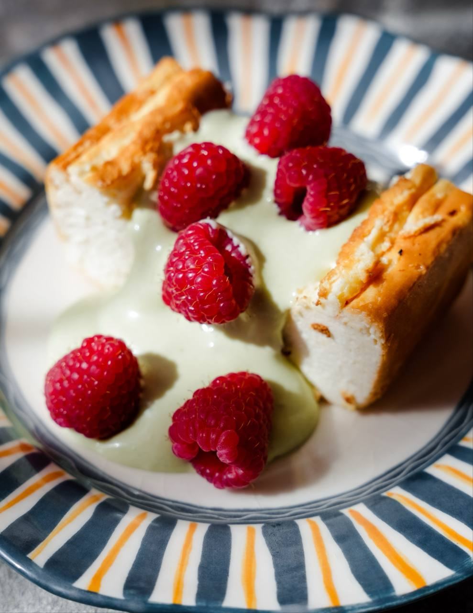
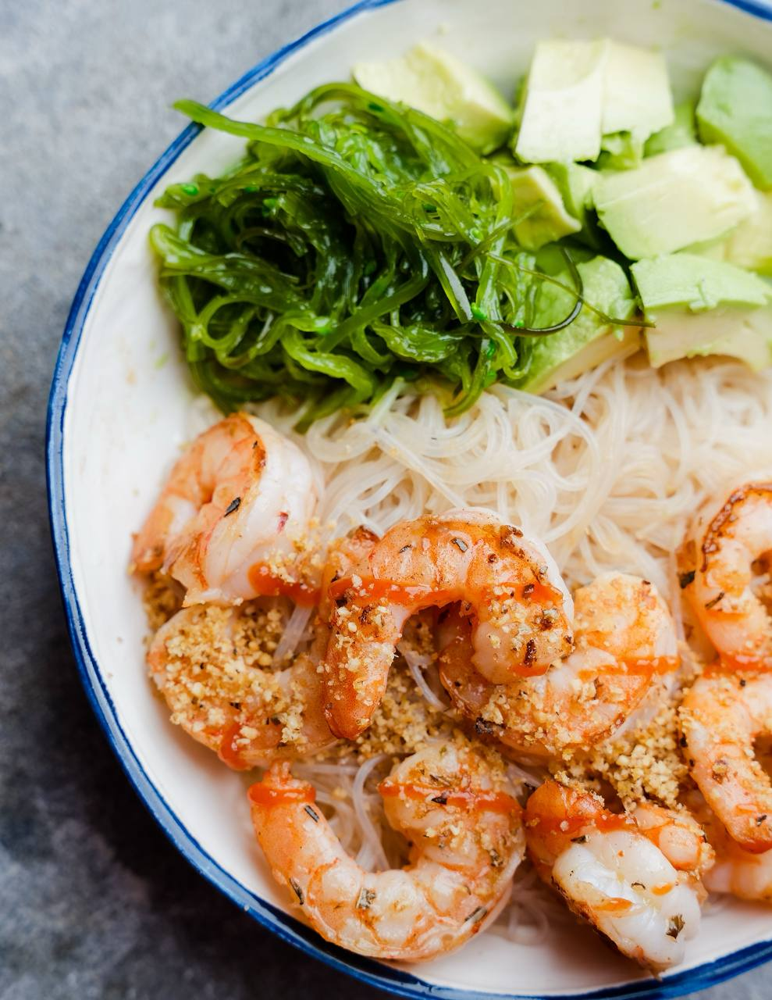
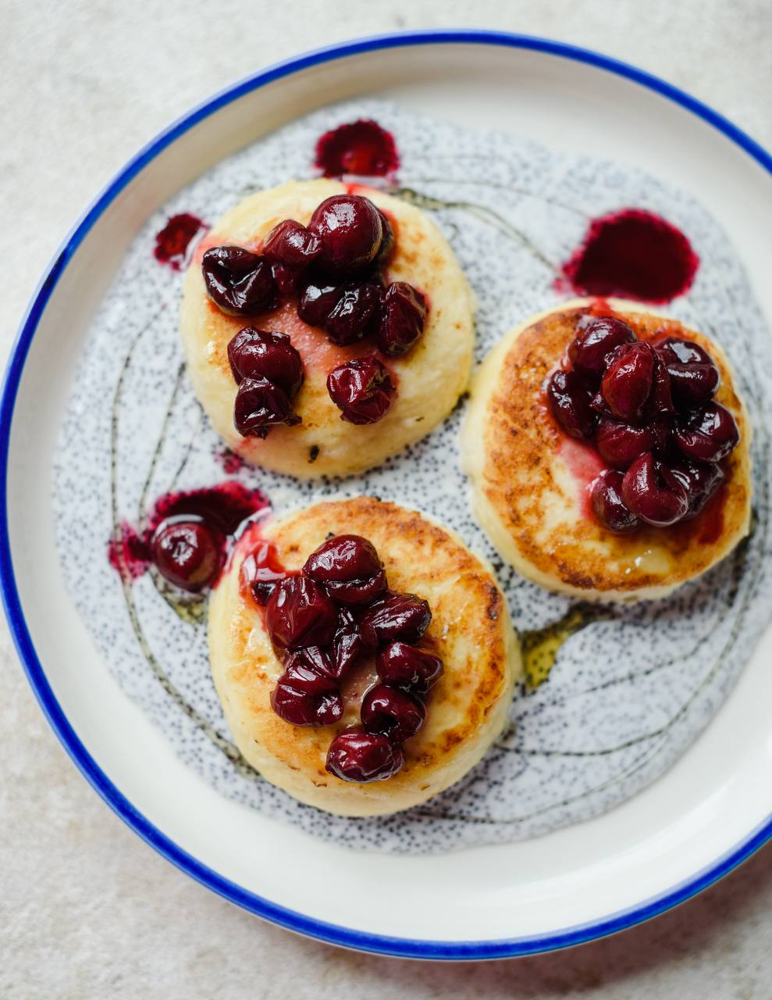
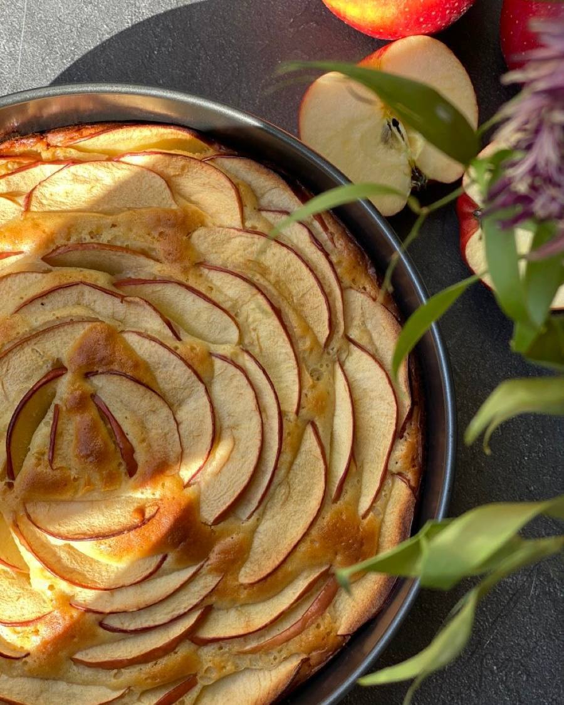
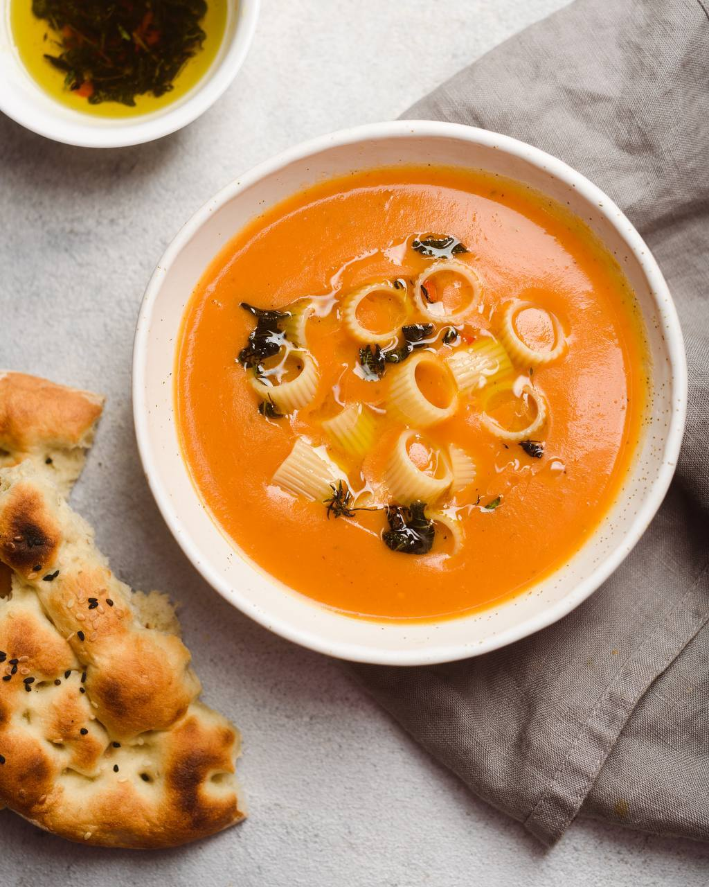

Что сегодня будем готовить?
По названию блюда или продукту — без лишних приключений.
Что готовим?
случайный рецепт
Не знаешь,
Не знаешь,
чего хочется?
Выбери категорию, продукты, время или сложность — а мы покажем один случайный рецепт.

Недавно добавленные

Сырники с вишней

Яблочный пирог

Томатный суп
Орзо с лососем
Сырники с вишней
Яблочный пирог
Томатный суп